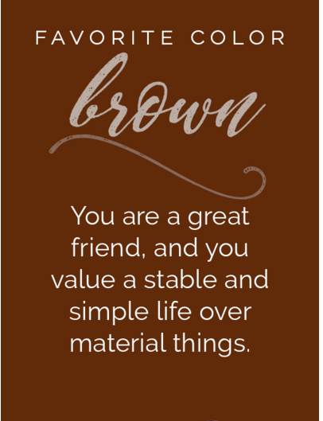

You are a great friend, and you value a stable and simple life over material things.
Your love of brown shows that you are shrewd when it comes to money and obstinate in your habits and convictions.
You are parsimonious, dependable, and steady. You disdain impulsiveness and are also a very good bargainer.
You relate to the simplicity of the color brown.
You tend to be genuine and transparent with your intentions.
Those who have hidden agendas and ulterior motives confuse you.
You fail to see the value in twisting the facts when the truth is so much easier to manage.
You are dependable and punctual and have high standards for excellence.
Experience has taught you that a solid foundation is mandatory for success.
You do things slow and steady...do it right or not at all.
No get rich quick schemes for you.
You have little patience for the snake oil salesperson types.
Family comes first and you enjoy the comfort of a stable home-life.
Your well-appointed and ordered kitchen is the hub of the house where you enjoy cooking.